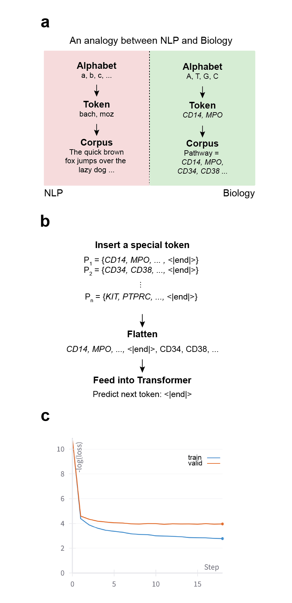
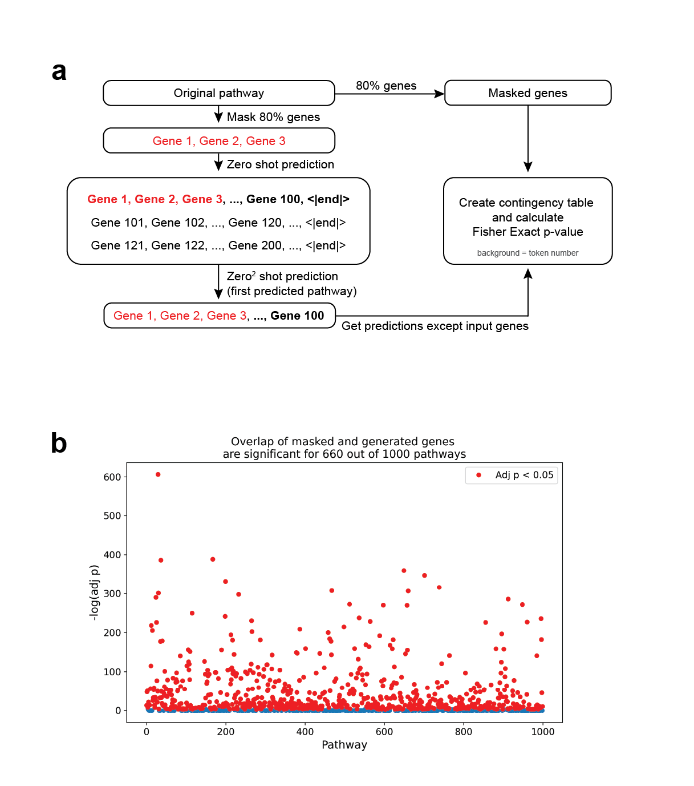

Talk Cells Can?
An Exploration of the Language of Cells
TL;DR
- Cells have a language.
- Transformers might decipher it.
 Created by ChatGPT-4
Created by ChatGPT-4
Introduction
Life in itself is an amazing achievement. From first single cell to complex organisms such as humans is a remarkable journey of 3.8 billion years. Along the way, cells learned how to organize,
to create more and more complex systems and even form what we today call intelligence. They also adapted to every condition that existed throughout this immense time frame,
showing their inherent resilience to change. However, this comes with a fundamental question “How does a cell know what to do?”.
Advances in high-throughput sequencing allowed us to sequence human cells (and other cells) in an unprecedented manner for the last couple of decades.
Allowing us to digitize information within cells such as number of messenger RNA (mRNA), which is an intermediary molecule between DNA and complex entities called proteins.
As proteins are the working force in a cell, mRNA could be seen as a medium to transfer information from DNA to proteins, or else as a language.
Over the years, we have gathered mRNA information in public databases both in its raw and analyzed forms.
Specifically for the latter, through differential analyses we curated gene sets called ‘pathways’ with known annotations.
Recently, the transformer architecture revolutionized natural language processing .
Self-attention layer within this architecture allowed these models to learn nuances of a given language.
Therefore, a systematic way of combining the transformer models and the pathway databases could revolutionize our understanding of the language of a cell.
One such naïve analogy between NLP and cell biology would be assigning alphabet to base pairs, tokens to genes, and a corpus to set of pathways (Figure 1a).
From here, one can simply add a simple end token per pathway after all its genes and flatten them and feed this corpus into a transformer model for predicting the next gene (Figure 1b).
Inherently, pathways lack the ordering information a language has, though they could be represented as acyclic graphs such as in Reactome .
Still with this naïve approach - predicting the next gene - one can hypothesize the transformer model could learn giving more attention to some genes than others in each gene set,
therefore essentially learning basic principles of predicting or completing a pathway, or the language.

Figure 1 – (a) An analogy between NLP and Biology where alphabets, tokens and corpus are shown per strata.
(b) A naïve approach for training transformer models with pathways. A special end token is appended to each pathway. Then, the pathways are flatten and fed into a Transformer.
(c) Loss function of the GPT-2 (120M) model on pathway data. Blue line is for training, orange is for validation dataset.
Results
To test this hypothesis, I curated 263,730 human pathways from Enrichr database ,
and adopted an implementation of GPT-2 (120M) decoder-only model to train a transformer from scratch.
I selected 10,000 pathways to be in the validation set and rest in the training set.
Then, trained this model on 2x TITAN Xp GPUs for ~12 hours (Figure 1c).
At this point, although the training loss was still decreasing the validation did not, indicating over-fitting of the model.
Therefore, the model with the smallest training error was selected.
However, this is not a fair comparison on the validation test as there is no true ordering of the genes within these pathways.
Therefore, another metric is required for evaluating the performance of the model.
A different method involves masking a part of a previously unobserved pathway while creating new genes using the ones that remain visible from the original pathway (zero-shot).
Next, the generated genes of the first pathway could be used as a surrogate (zero2-shot).
Finally, one can create a contingency table with the surrogate and the masked genes and calculate the p-value with Fisher Exact test, which I named TCC (Figure 2a).
For 1000 unseen pathways, I concealed 80% of their genes and then used the transformer model to generate new tokens to fill in the pathway.
Remarkably, with just 20% of the genes from a pathway, the model was able to fill in 660 out of 1000 pathways with statistically significant overlap after Benjamini-Hochberg correction (Figure 2b).

Figure 2 – (a) Talk Cells Can (TCC) method to compare masked genes vs generated genes by the transformer model.
80% masking is applied to each pathway. Then, masked genes were predicted via Transformer and these two sets were compared using Fisher Exact test. Background was taken as total token number. (b) -log(p) values from TCC for 1000 unseen pathways.
660 out of 1000 pathways were significantly overlapped with the completion of the transformer.
Pathways with BH-adjusted P < 0.05 colored with red.
Discussion
Here, I simply showed that given a large database of pathways, transformers can learn intrinsic relations between genes within pathways even in the case of extreme gene masking.
However, there are many areas this small study did not cover. For instance, these models could be further improved by incorporating the graph nature of the pathways.
Furthermore, I just trained a decoder-only model, however, some of these pathways have their detailed annotations which could potentially be used for translating the pathways into daily language.
Methods
Dataset curation and preparation
hypeR was used to download all databases automatically. Most recent versions of databases were selected (i.e. GO2023), then pathways with < 5 genes were removed.
To reduce the inconsistency between datasets, all gene symbols were uplifted to hg38, and the genes with < 5 occurrence in whole dataset were deleted.
Lastly, pathways with < 90% of human gene symbols were filtered out. In the end 263,730 pathways were used for down-stream analyses.
All dataset consist of 44,902 tokens (genes). The dataset was then split into two, with 10,000 pathways to be in the validation and the rest being in the training dataset.
Overall, training data had 47,316,670 and validation data had 2,490,352 tokens.
Transformer and hyper-parameters
I used karpathy/nanoGPThttps://github.com/karpathy/nanoGPT github repository to train our transformer.
Each batch had 16 samples with a block size of 512, and I set gradient accumulation of 2 to make the transformer model fit into our 2x TITAN Xp GPUs. Each evaluation was performed per 1000 iterations.
Code Availability
All codes for training the model and tests are uploaded to eonurk/TCChttps://github.com/eonurk/TCC.
Acknowledgements
I would like to express my sincere gratitude to Ramin Shirali, and Alper Eroglu for the fruitful discussions.
I would also like thank Andrej Karpathy for making Neural Networks: Zero to Hero and the GPT-2 code available to the community.